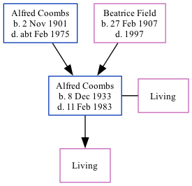

Alfred William Charles Coombs 1933 - 1983
[ Home ] | [ Calendar ] | [ Surnames Index ] | [ Family History ]A royal military police officer and police officer and the son of Alfred Coombs (a truck driver) and Beatrice FieldAlfred Coombs, the third cousin once-removed on the mother's side of Nigel Horne, was born in Faversham, Kent, England on Dec 8, 19331,2,3 and. He had 1 surviving childwith Gwendolen M Grove: .
Throughout his life, he lived at 60 Makenade Avenue in Faversham on Sep 29, 19391; and at 14 Lynmouth Road, Leicester, Leicestershire, England in 1983.
He died on Feb 11, 1983 in Leicestershire3,4 (motor neurone disease).
Parents
- Alfred William Constable was born on Nov 2, 1901
- Beatrice Louisa S was born on Feb 27, 1907
Citations
- 1939 Register - Findmypast (was the son of the head of the household)
- England & Wales births 1837-2006 - Findmypast
- England & Wales deaths 1837-2007 - Findmypast
- England & Wales Government Probate Death Index 1858-2019 - Findmypast
Media
1939 Register Transcription - TNA-R39-1716-1716D-022-12
1939 Register - TNA/R39/1716/1716D/022/14
England & Wales deaths 1837-2007 - BMD/D/1983/1/AZ/000227/057
England & Wales births 1837-2006 - BMD/B/1934/1/AZ/000224/010
England & Wales Government Probate Death Index 1858-2019 - GBOR/GOVPROBATE/C/1983-1983/00049284
Family Tree
Generated by ged2site. Last updated on Nov 13, 2024